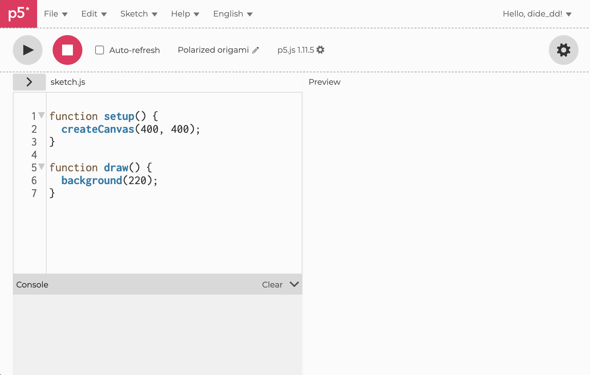

Getting Started
What is programming?
Programming is the action of giving a computer a set of instructions in the form of code, which follows a precise syntax based on the language we’re using, which in our case will be JavaScript. Humans communicate with each other through natural language, like English or Italian, which allows some interpretation in it, even though we don’t notice that. For example, “Put the book on the table in the bedroom”, that could either mean “Move the book from the table to the bedroom” or “Move the book on the table that is in the bedroom” and we as humans are able to understand what the sentence means based on the context. A computer is not able to do that, we must always explain to it exactly what it needs to do through a programming language.
Before dealing with JavaScript and what does it mean to tell the computer what to do, it might be useful to understand the concepts and reasonings of a program without needing to deal with the constraints and difficulties of an actual programming language. This is usually done by writing pseudocode, a text that is somewhat in between natural and programming languages. There aren’t fixated rules on how you should write it, as its purpose is to understand what we are going to do with our program before even turning on the computer. However, this doesn’t mean that it shouldn’t be clear, see it as a tool to plan the logic of your program without thinking about syntax. Let’s say for example that we want to make a hamburger. Our set of instructions in pseudocode might look like this:
put bread
put burger
put cheese
put tomatoes
put bread
At the same time, if we wanted to write pseudocode for creating a rectangle with a circle perfectly fitting inside of it, we might write the following:
draw square
draw circle, diameter = side of the square
This is perfectly fine, but we might also decide that we want to have more data already in our pseudocode. So, if we decide that our square is 400 pixels wide, we could also say:
num = 400
draw square with side of num
draw circle with diameter of num
It still is pretty easy to understand. It is advisable to always plan out our coding in pseudocode before starting to write on a computer, as it allows us to think of the instructions to give to the program without also thinking of how should it be written.
Exercises
- Fill a grid with black and white tiles, alternating colors.
Tip: Change the color based on odd or even numbers. - Make a row of 10 circles that are each bigger of 10 px
Tip: Repeat 10 times the creation of a circle and its radius increase - In a row of 9 shapes, color every third one red, and the rest gray.
Tip: Check every time if the circle number is dividable by 3 - Create a diagonal line of squares going down and to the right.
Tip: Increase both the x and y position equally each time.
History Bit
When we program, we’re not actually “talking” the “computer language”, we’re using a language that is still somewhat understandable by human beings. This is then “translated” into a machine readable language, consisting on the binary (the famous zeros and ones that make up computers) instructions which will tell the computer what to do. In the late 1800s programming meant to turn on and off actual levers, i.e. changing zeros to ones and vice versa, which allowed to make simple calculations. In the 40s, the first programming languages emerged, but they were still not very easy to understand by humans. Over time, programming languages evolved to be more understandable by humans. These are “high-level languages” as they need a higher level of “translation” to be understood by the computer, as opposed to “low-level” languages, which need little translation to machine readable code.
JavaScript and p5.js
As mentioned in the introduction, this manual will use to p5.js (referred from here just as p5), an open source JavaScript library for creative coding. What does this mean? A library is a collection of resources used by a program to implement functions without having to manually implement them. In other words, it’s like a toolbox with a series of tools that you can use to build a program faster and without knowing exactly how is it working. However, p5.js is particularly handy not only because of its design dedicated tools, but also because it works in a way that strongly simplifies the JavaScript language, making it even easier to use. Because of this reason, beware if you decide to use your new knowledge and skill to write scripts for Adobe Photoshop and InDesign, since you wouldn't use JavaScript for creating visuals but rather for automating tasks, which needs a different set of "commands" than the ones we are learning here. Don't be too preoccupied though, you will find that the knowledge you have will still give you a solid advantage.
Compared to humans, computers are not as bright as us, and what may seem obvious to us, it is not to them. For example, for us CreateCanvas and createCanvas are virtually the same, but unfortunately, they are completely different statements for our computer and our programming language. This is because languages like JavaScript are case sensitive, which mean that a capitalized letter is not the same as a lower case one.
Usually any library comes with a documentation, which explains what every function does and how to use it. It is a crucial resource to help you implement programs, as on p5 website they are not only explained, but everything comes with a series of examples. P5 does not only that, it also offers a web-based interface to allow you to immediately start coding without needing to download anything, you just need to visit editor.p5js.org in order to start working. This will be our workspace throughout the book, let’s take a look.

At the top of the screen, we find two simple buttons that allow us to play or stop our program. On the left side we find the main code editor which displays by default the sketch.js file. Below the code editor, there's the console where messages or error feedbacks will appear. This is going to be extremely useful when troubleshooting our programs. Finally, on the right side of the screen there's the preview area, where the output of the code will be run and be interacted with.
History Bit
In 2001, Casey Reas and Ben Fry developed the Processing language (also known as p5), which was based on Java, at the time one of the most immediate way to have graphical content on the internet. Since then, JavaScript became the dominant language of the web, which prompted John Resig in 2007 to “translate” Processing to JavaScript (which, despite the name, doesn’t share anything with Java), calling it Processing.js. However, it based itself on the original Processing, which meant you still had to go through some processes to get your Processing.js projects on the web. That’s when p5.js made its advent, as it is in fact a reimagined version of Processing specifically based on JavaScript, which allows to follow JavaScript syntax and simplified application on the web.
We can immediately see that by default p5 has some code written in it, it’s time to understand the basics of what our programs are going to be made of.
Any p5 code will have a variable number of functions in it, but the very least is two, exactly like the ones we’re looking at. A function is like a command that our code is going to execute, which can be more or less complex. In our sample code, we have the setup and the draw functions, the very basics of a p5 program. The setup function runs once at the beginning usually setting up our canvas, while the draw function runs repeatedly, like animation frames. Any function is like a container with a set of more in depth instructions in it, and to tell the program when do the instructions of the given function start and end we use curly brackets.
function setup() {
createCanvas(400, 400);
}
function draw() {
background(220);
}
If we try to run it, a simple gray square will appear on the side of the screen. What has happened? The instruction, called call, in the setup function was createCanvas(400, 400), where createCanvas is the name of the command and the numbers inside the parentheses are the settings of our command. Almost every command in p5 will be followed by parentheses, which are filled with the precise settings, which are called arguments, that we need to give it. When we see (or write) nothing inside the parentheses it’s because we’re okay with the default settings it has, which are not shown. Attention though, not every function is able to work without explicit parameters. For example, createCanvas needs as parameters a width and height to function properly, if we just write createCanvas() the command will take as width and height 0, which means it will create a 0x0 px canvas, therefore a useless one. In our sample code both the height and width are defined to be 400, which explains the reason why our canvas is a square. Why the gray though?
The second function of the program is draw, which contains a simple statement: background(220). It’s telling the computer to draw the program with a specific color, and it can take different kinds of parameters. If we only write one number, we will be using a shade of gray, while if we write three numbers, those will be RGB values. In our case we only have a number as an argument, which means it’s taking 220 as the grayscale value for the background, this explains the gray color of the square.
::: Summary Function: a command, it contains a series of instructions in the form of calls. Call: specific instruction to be executed Argument: specific settings of a command, contained in circle brackets. :::
Let’s try and make this more interesting. First, let's setup our background just after creating the canvas, without having to re-draw it at every frame. What to do now in the draw function? Try to run this code and to pass your mouse on the canvas:
What do you think is going on? At every frame a circle is being drawn. In p5, a circle requires three parameters: the X and Y coordinates of the center and its radius. In our case, we are giving as the first two parameters the mouse X and Y coordinate and a radius of 30. As the call is being run in the draw function, at every frame our program checks where our mouse is and it draws a circle of radius 30 with the position of the mouse as its center. You can try to change the parameters in the various calls to see how that changes the looks of your canvas!
A white circle with a black outline can be be a bit boring. How can we change that? We need to tell the program how will the circle look like before actually drawing it. To do so, we will need to implement two new calls. The first one is fill(), which will define what color the fill of the circle, or any shape we are drawing, is going to be. This is done exactly like the background color, which means that a single digit will be translated in a grayscale value, while three digits will be translated in an RGB value. For example, fill(0, 0, 255) will set our circles to be blue.
To change the outline color instead, we will use the stroke() call, which needs the same kind of parameter as the fill and background calls. What about the stroke width? The call we need now is strokeWeight(), which takes as parameter a digit that stands for the pixel width of the stroke.
What about the other shapes though? Another useful shape is a rectangle. Similarly to the color parameters, the amount of data we give to it will change the way the program understands what he has to do. The most immediate way to implement the rect() call is to give it 4 basic parameters: the top left corner coordinates and then width and height, for example: rect(20, 50, 100, 150) will create a rectangle with its top left corner at the coordinates 20, 50 and which has a width of 100 and a height of 150.
When programming it might be rather useful to give a name to a certain value, in order to use it more times in our code without needing to repeat the value over and over. Imagine this as putting the number inside a labeled box - for example “circles amount”. When you need that number, instead of writing it every time, you just refer to it through its label “circles amount”. This also makes it easy to update the value later by just changing the number in the box. These “boxes” are called variables, which we can either just declare, i.e. create the box without putting anything in it, or initialize, which means also assigning it a value.
To do this in p5 we use a very simple syntax: let variableName = value.
//declare without initializing
let circleAmount;
//initialize a declared variable
circleAmount = 3;
//declare and initialize
let squareAmount = 5;
Remember to declare a variable before initializing it, otherwise you will get an error from the editor.
Useful Calls
Note that x or y followed by a point informations means the parameter is the x coordinate of that point.
ellipse(xCenter, yCenter, width, height)
arc(xCenter, yCenter, width, height)
line(xFirstPoint, yFirstPoint, xSecondPoint, ySecondPoint)
point(x, y)
square(xCorner, yCorner, sideLength)
triangle(x1Corner, y1Corner, x2Corner, y2Corner, x3Corner, y3Corner)
Before delving into some exercises to understand better these concepts, it’s worth mentioning a key part of programming: comments. If you decide to share your work with a friend or a coworker, or even if you open a program after a while, all the code you wrote may appear very hard to understand. To avoid this issue, it’s useful to write comments that might help us remember what a function or a line did, in order to avoid confusion and simplify the working process.
To do these we just need to write // at the beginning of a comment: these two simple characters will tell p5 to ignore everything that comes after them. This way you can keep track of your work on the javascript file itself.
Attention though, as we shouldn't comment everything we write, but just what might be unclear or that might be useful to explain better.
//draws rectangle
rect(500, 400, 200, 300);
//text background rectangle
rect(500, 400, 200, 300);
Rarely we will also need to write code in between a line, to do that we will use /* at the beginning of the comment and */ at the end, this way javascript will know exactly what part to ignore.
Now that we know these functions, calls and a few useful parameters, such as mouseX and mouseY, we can already start to have some fun.
Exercises
- Write a code to draw circles with their center on the center of the canvas, and whose size is determined by the position of the mouse in the Y coordinates.
Tip: Use width/2, height/2 instead of manually calculating the values. This way, the code will work even if you change the canvas dimensions. - Write a code that produces the diagonals of a given canvas.
Tip: There are many ways to do this, the simplest is to write twoline()calls - Write a code where 4 lines, departing each from one of the corners of the canvas, converge on the mouse position. The mouse can go anywhere and the 4 lines will always converge onto it.
You could either have redraw the lines at every frame or have them move without trail. This depends on where you write a key line of code. What line is it and what is happening? - Using the same logic, draw lines from the center of the canvas to the mouse position.
- Mirror the mouse movement to create circles across the canvas center.
Tip: the mirrored point should be the height (or width) minus the mouse position
Now that we know the very basics of p5 programming, it might be interesting to see how to implement some “settings” you’re used from classic software, like changing the opacity of a shape or integrating typography directly from p5. This can be useful as it gives us freedom of applying these options, without being limited by the software.
Transparency
We will now look at how to handle transparency and blend modes in our p5 projects, concepts with which designers should already have some familiarity.
In p5, just like many design and illustration softwares, transparency is called alpha and it is not linked to the shape, but the color of the object. Its value ranges from 0 to 255 and it can be set through the setAlpha() call. This means that if we have a circle called c1 we cannot change its alpha value directly, but instead we have to declare a color variable and change its alpha value. Remember to repeat the fill() call, otherwise p5 will fill the new circle with the old version of the color if you already used it. Let’s have a look directly.
Just as we're used doing with programs like Adobe Photoshop, but also Procreate or other Adobe programs, opacity is not the only way to change how our shapes look when in front of other parts of the canvas: we can also use blend modes. To use them we will implement the call blendmode(), which asks as a parameter the name of the mode. These names are mostly the same as the ones we find in common image editing tools.
Blend Modes
Here are the main modes we can use:
ADD: color values from the source are added to values from the canvas.
DARKEST: keeps darkest color value.
LIGHTEST: keeps lightest color value.
MULTIPLY: color values from the source are multiplied with values from the canvas. The result is always darker.
SCREEN: all color values are inverted, then multiplied, then inverted again. The result is always lighter. (Opposite of MULTIPLY)
DIFFERENCE: color values from the source are subtracted from the values from the canvas. If the difference is a negative number, it's made positive.
OVERLAY: combines MULTIPLY and SCREEN. Dark values in the canvas get darker and light values get lighter.
HARD_LIGHT: combines MULTIPLY and SCREEN. Dark values in the source get darker and light values get lighter.
SOFT_LIGHT: a softer version of HARD_LIGHT.
Adding Typography to the Canvas
As typography is its own precise and important practice this section of the chapter aims to only explain how to render a designer’s own knowledge on the topic in a javascript canvas, but does not in any way aim to explain typography concepts to the learner. Because of this, many typographic concepts will be given for granted and only the ways for those concepts to be implemented will be hereby explained.
The simplest way to add typography to a canvas is to use the text() call, which requires three minimum parameters: the text to be written and then the x and y coordinates of the text’s bottom left corner. As with the shape calls we’ve seen so far, both fill() and stroke() are used for styling our text and they will respectively change the text color and its outline.
By default, the text size is 12, but we can change it with a simple textSize() call, in which the only parameter is the desired size in points.
Technically speaking, the text parameter is called a string, which can also be declared and initialized as a variable, just like we did with numbers. For example:
As you can see, we declare a string by surrounding it with ‘’ characters. Note that you can also choose to use "" and it will be exactly the same. The second string we declared has a weird \n in between two words. What do these strange characters do? If we tried to place this in a text and run our program we will see that \n created a new line. What we’re looking at is an escape sequence, i.e. a sequence of characters used to write a special character in our string, that if we were to write normally it would somehow disrupt our code. In this case, creating a new line by pressing enter would only be confusing for both us and our JavaScript interpreter.
Escape Sequences and Useful Calls
Common escape sequences:
\t = tab
\n = new line
\’ = ‘
\” = “
Useful calls:
textStyle(style) – Sets the style for system fonts with NORMAL, ITALIC, BOLD and BOLDITALIC.
loadFont(path) – Loads a font and creates a p5 font object.
textFont(font, [size]) – Sets the font used, the second optional parameter is the size.
Handling Images
As a designer, it’s likely that you will decide to work with images in your projects, and you might be wondering how to handle them in p5. As with almost any other thing we saw until now, images will be handled through a series of calls. Before doing that, we need to have an image in our files in the first place. We can do that by pressing the arrow on the upper left corner of the editor to open the sketch files window, and then pressing plus, finally “Upload File.
Now that we have our image ready, we can start working with it.
Furthermore, just as we saw with values and strings, images are objects in p5 (and in many other programming languages), and as such they can be handled through variables created with the let keyword. As we’ve seen before, we can either declare our object variable without immediately assigning it or not. To assign an image to our object we will be using the loadImage() call, which requires a string with the image path as a parameter.
Usually all “load” calls for loading assets are used in a special kind of function: preload() which will be called before `setup() and draw().
Now that we have our image ready it’s time to actually create a canvas with it. To do so we will have to first create a canvas with the same size as the image. To do so, we will need to call the image size in the parameters of createCanvas() through the dot operator. In many programming languages we can use the dot operator to call an object data, for example the length of a string or the width of an image, like in our case. Finally, we will need to draw our image by using the simple call image() which requires as parameters the image we are going to use and the coordinates of the top left corner, which in our case is 0, 0.
This is how our program will look like now:
function preload(){
let img = loadImage(‘example.txt’);
}
function setup(){
createCanvas(img.width, img.height);
image (img, 0, 0);
}
If we wanted to easily resize our image and canvas, we might want to use the fourth and fifth unnecessary parameters of the image() call: the bottom right corner coordinates. For example we might edit our code this way:
function preload(){
let img = loadImage(‘example.txt’);
}
function setup(){
createCanvas(img.width/3, img.height/3);
image (img, 0, 0, width, height);
}
Exercises
- Bla bla
- Bla Bla
- Bla